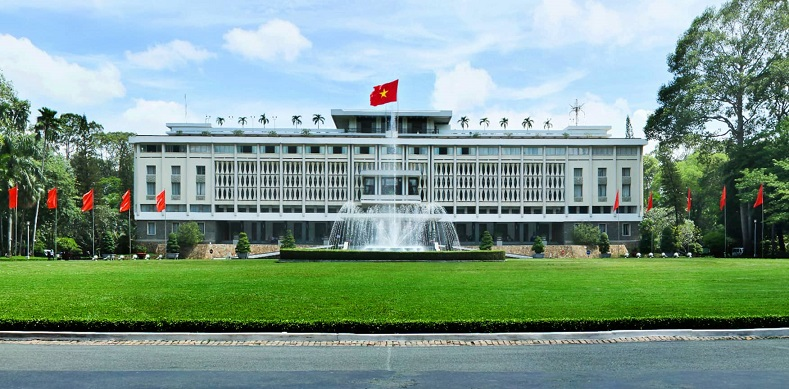
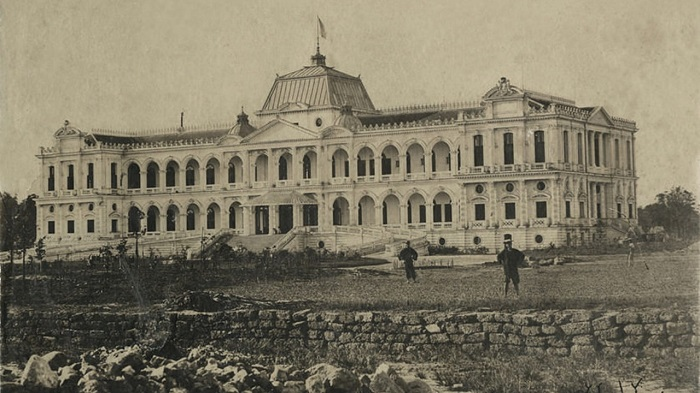
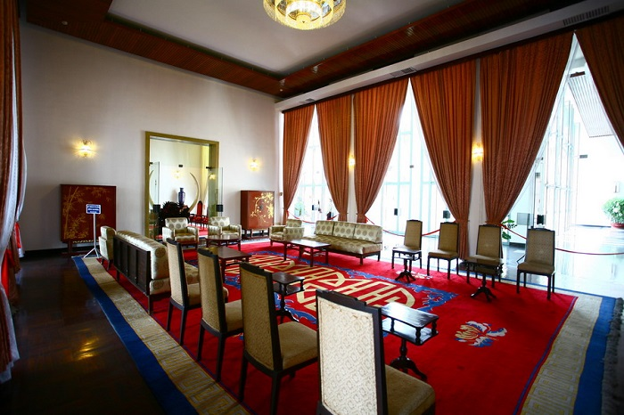
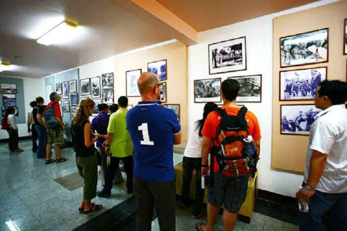
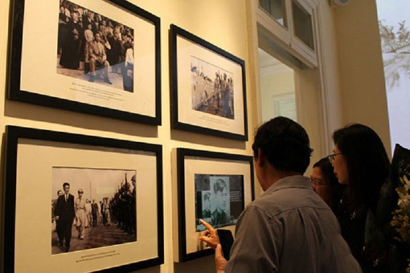
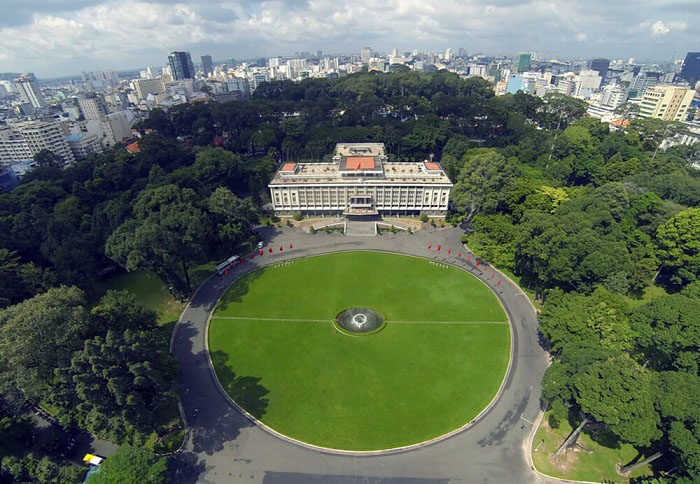

Ghé thăm Dinh Độc Lập - di tích lịch sử nổi tiếng Sài Gòn
Nếu có cơ hội du lịch tới thành phố Hồ Chí Minh, bạn đừng bỏ lỡ cơ hội khám phá Dinh Độc Lập. Nơi đây lưu giữ những dấu mốc đáng tự hào của dân tộc trong cuộc chiến tranh khốc liệt. Hy vọng, bạn sẽ có được những trải nghiệm đáng nhớ!

Khu di tích nằm ở số 135 Nam Kỳ Khởi Nghĩa, phường Bến Thành, quận 1, thành phố Hồ Chí Minh
Là khu di tích lịch sử nổi tiếng Dinh Độc Lập thu hút rất đông khách du lịch tới tham quan, tìm hiểu về lịch sử. Bạn sẽ được tận mắt chứng kiến những tư liệu sống động về 1 thời đã qua, thêm yêu và trân trọng cuộc sống.
- Giới thiệu về Dinh Độc Lập
- Tên gọi khác và lịch sử Dinh
- 2.1. Về tên gọi
- Năm 1871, sau khi xây dựng xong, Dinh được đặt tên là Dinh Norodom.
- Từ 1871 - 1887, có tên gọi là Dinh Thống đốc Nam Kỳ.
- Từ 1887 - 1945, nơi đây được đổi tên là Dinh Toàn Quyền.
- Vào khoảng năm 1955, Ngô Đình Diệm - Tổng thống Việt Nam Cộng Hòa đã quyết định đổi tên Dinh Toàn Quyền thành Dinh Độc Lập, và cái tên này cũng được tồn tại cho đến tận ngày hôm nay..
- 2.2. Về lịch sử
- Có gì bên trong Dinh Độc Lập?
- 3.1. Khu vực cố định bên trong Dinh Độc Lập
- 3.2. Dinh Độc lập có gì? Khu chuyên đề
- 3.3. Khu bổ sung trong Dinh ở Thành Phố Hồ Chí Minh
Dinh Độc Lập ở đâu? Dinh Độc Lập ở quận mấy? Dinh Độc Lập xây dựng năm nào? Ý nghĩa Dinh Độc Lập ra
sao? Dinh Độc Lập còn có tên gọi khác là gì? Đây là những thắc mắc phổ biến của rất nhiều du
khách.
Khu di tích nằm ở số 135 Nam Kỳ Khởi Nghĩa, phường Bến Thành, quận 1, thành phố Hồ Chí Minh, được
xếp hạng là di tích quốc gia đặc biệt. Nơi đây đã chứng kiến rất nhiều sự kiện lịch sử, thăng trầm
của đất nước, đặc biệt là sự kiện Giải phóng miền Nam thống nhất đất nước vào ngày 30 tháng 4 năm
1975.
Trải qua nhiều lần đổi tên, hiện nay, khu di tích có tên gọi Dinh Độc Lập. Ý nghĩa Dinh Độc Lập mang
sự tự hào về dân tộc, về 1 thời hào hùng chống thực dân xâm lược.
Khu di tích lịch sử nổi tiếng, chứng kiến nhiều sự kiện thăng trầm của dân tộc.
Dinh Độc Lập còn có tên gọi khác là gì? Chúng ta hãy cùng tìm hiểu những mốc sự kiện như:
Dinh Độc Lập còn được biết đến với rất nhiều tên gọi khác nhau:
Địa chỉ được biết đến với rất nhiều tên gọi khác nhau như: Dinh Norodom, Dinh Thống đốc Nam Kỳ, Dinh Toàn Quyền…
Đến Dinh, ngoài việc tìm hiểu lịch sử dân tộc, du khách cũng có thể thăm thú nhiều cảnh đẹp xung quanh. Bởi thế, việc lựa chọn được nơi lưu trú là điều cần thiết giúp chuyến đi được thuận lợi, nhanh chóng.
Dinh Độc Lập được bắt đầu xây dựng vào thời Pháp thuộc. Ngày 23/2/1868, Thống đống Nam Kỳ Lagrandière đã làm lễ khởi công xây dựng Dinh Thống đốc Nam Kỳ tại Sài Gòn.
Địa chỉ được biết đến với rất nhiều tên gọi khác nhau như: Dinh Norodom, Dinh Thống đốc Nam Kỳ, Dinh Toàn Quyền…
Đến năm 1962, một vụ đánh bom đã khiến phần chính cánh trái và cổng Dinh Độc Lập sập hoàn toàn.
Vì không thể khôi phục lại, Ngô Đình Diệm đã quyết định san bằng, đồng thời cho xây dựng lại
Dinh thự ngay trên nền đất cũ.
Dinh mới cao 26m, nằm trong khuôn viên 12ha, có diện tích khoảng 4500m2. Trong đó, diện tích sử
dụng lên tới 20000m2 với 3 tầng chính, 2 gác lửng, tầng nền, 2 tầng hầm, 1 sân thượng dùng để đỗ
máy bay trực thăng.
Thiết kế Dinh Độc Lập độc đáo, toàn bộ Dinh có khoảng hơn 100 phòng được trang trí theo nhiều
phong cách khác nhau sao cho phù hợp với từng mục đích sử dụng. Đến nay, đây vẫn là công trình
mang đậm dấu ấn kiến trúc, khẳng định sự tài hoa, khéo léo của kiến trúc sư cũng như những người
thợ xây dựng.
Dinh được chia thành 3 khu riêng biệt bao gồm: khu cố định, khu chuyên đề và khu bổ sung. Mỗi phân khu lại có những nét độc đáo riêng, tha hồ cho du khách khám phá.
Khu vực cố định là nơi làm việc, sinh hoạt của chính quyền xưa. Các phòng trong Dinh Độc Lập như: phòng, khánh tiết, đại yến, các nội, hội đồng an ninh, phòng làm việc của tổng thống và các quan chức chính phủ… ngoài ra còn có khu phòng ngủ, khu sinh hoạt, khu giải trí…
Khu vực cố định bên trong dinh là nơi làm việc, sinh hoạt của bộ máy chính phủ.
Đến đây, bạn sẽ được tận mắt chứng kiến những di tích sống động. Từ đó, hiểu được 1 phần sự khắc nghiệt của chiến tranh.
Đây là khu trưng bày các chuyên đề, các cuộc triển lãm lớn. Du khách sẽ được nhìn lại những tấm ảnh sống động của thời kỳ trước. Dưới sự hướng dẫn, thuyết trình của các hướng dẫn viên du lịch, bạn còn được tìm hiểu thêm nhiều chi tiết lịch sử ẩn sâu bên trong. Đây là những kiến thức rất hiếm thấy trên sách báo hoặc các tài liệu khác.
Nơi đây thường xuyên diễn ra các cuộc triển lãm, trưng bày lịch sử.
Khu bổ sung trưng bày, lưu giữ rất nhiều tấm ảnh mang giá trị lịch sử. Chúng được rày công sưu tầm và gìn giữ nhằm giúp thế hệ con cháu sau này hiểu được 1 phần lịch sử. Bạn sẽ thấy được sự kiên cường, bất khuất của tầng lớp cha ông đã chiến đấu, chiến thắng kẻ thù để có được cuộc sống như ngày hôm nay.
Du khách được tìm hiểu 1 thời hào hùng của dân tộc thông qua các bức ảnh lịch sử có giá trị.
Ngoài tham quan các khu chính, du khách cũng có thể thăm tầng hầm Dinh Độc Lập hoặc dạo chơi bên ngoài khuôn viên, nơi đây, có những bãi cỏ xanh mướt. Từ đây, du khách cũng có thể nhìn ngắm dinh thự ở mọi góc độ, khám phá được nét kiến trúc Dinh Độc Lập hài hòa, độc đáo của không gian.
Toàn cảnh khu di tích xanh mát, có rất nhiều cây xanh và bãi cỏ rộng.